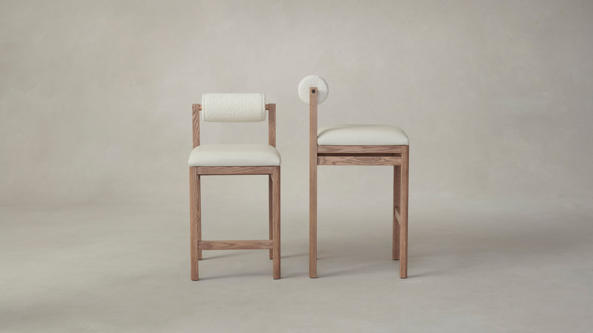

CONSTRUCTION
The perfect accent
chair for any room
Cushion
The Thayer's seat cushion features a core of high-resiliency foam wrapped with a layer of microfiber for a structured, supportive sit.
Upholstery
Premium fabric upholstery with a soft touch and elegant look.
Frame
Made from solid oak wood for durability and a natural aesthetic.
Finish
Hand-polished matte finish to enhance the wood’s natural grain.
